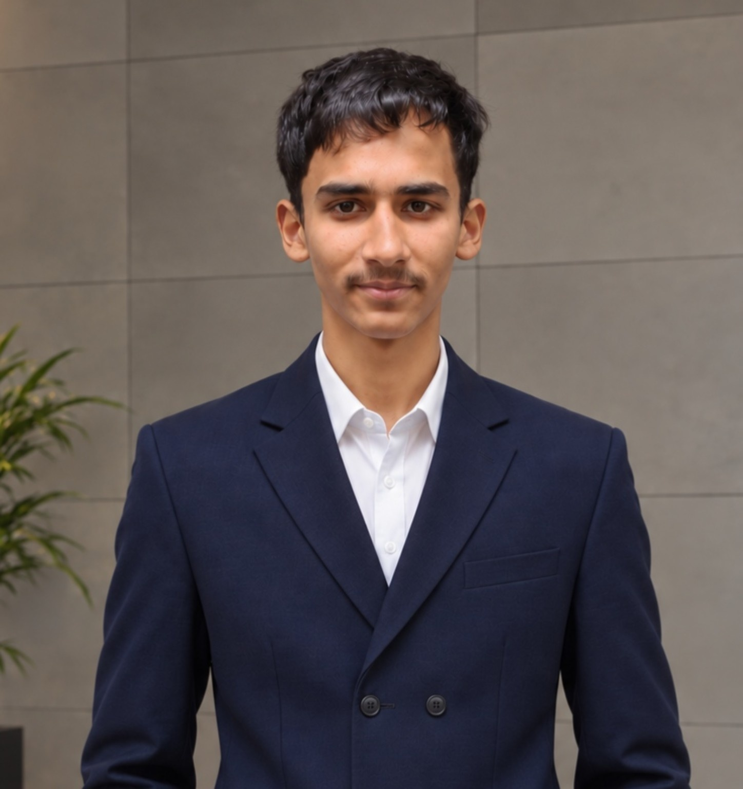

🧬
Medicine & Biology
Building a strong foundation in biology, anatomy, physiology and medical science with the long-term goal of becoming a doctor.
Researcher • Future Doctor • Lifelong Learner

I am Husain Farooqui, a student with a strong interest in science, medicine, technology and research. I enjoy understanding how things work and turning that curiosity into learning and practical projects.
My academic journey is focused on building a strong foundation for medicine and preparing for NEET. Alongside academics, I explore programming, artificial intelligence, web development and scientific concepts beyond the classroom.
I believe learning should never stop — every question is an opportunity to understand something better.
Building a strong foundation in biology, anatomy, physiology and medical science with the long-term goal of becoming a doctor.
Interested in scientific thinking, evidence, meaningful questions and the process of turning knowledge into useful discoveries.
Exploring artificial intelligence and digital tools, especially their potential to improve productivity, learning and healthcare.
Learning Python, HTML, CSS and JavaScript while building projects and experimenting with new ideas.
My current focus is becoming academically strong, developing disciplined learning habits and preparing for the path toward medicine while continuously building technology skills.
I want to explore the intersection of medicine, artificial intelligence, research and innovation, and eventually build useful solutions that can make healthcare and scientific work more effective.
Science and medical foundations • NEET preparation • Python • Web development • Artificial Intelligence • Research-oriented thinking • Digital productivity.